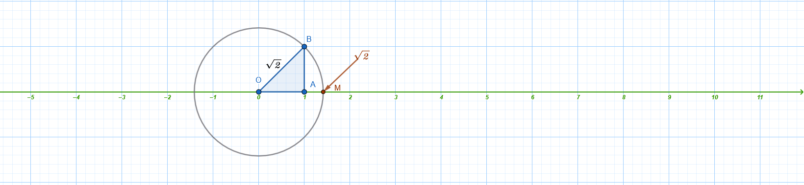
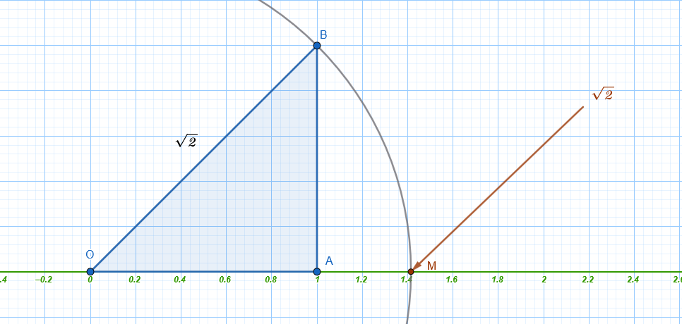

1 Οι πραγματικοί αριθμοί
1.1 Ξαναθυμόμαστε ….
Οι πραγματικοί αριθμοί αποτελούν το βασικό σύνολο αριθμών που χρησιμοποιείται στα Μαθηματικά του Λυκείου και συμβολίζεται με το γράμμα \(\mathbb{R}\). Το σύνολο αυτό αποτελείται από την ένωση δύο μεγάλων υποσυνόλων: των ρητών και των άρρητων αριθμών.
Ρητοί Αριθμοί (\(\mathbb{Q}\))
Ρητοί ονομάζονται οι αριθμοί που έχουν ή μπορούν να πάρουν τη μορφή κλάσματος \(\dfrac{\alpha}{\beta}\), όπου \(\alpha, \beta\) είναι ακέραιοι και \(\beta \neq 0\).
Περιλαμβάνουν:
Τους ακέραιους αριθμούς (π.χ. \(3, -7, 0, 5\)).
Τους δεκαδικούς αριθμούς με πεπερασμένο πλήθος δεκαδικών ψηφίων (π.χ. \(0,52, 2,7131, -6,42\)).
Τους περιοδικούς δεκαδικούς αριθμούς (π.χ. \(0,333..., 2,7282828...\)).
Άρρητοι Αριθμοί
Άρρητοι ονομάζονται οι αριθμοί που δεν μπορούν να γραφούν σε κλασματική μορφή. Στη δεκαδική τους μορφή έχουν άπειρα δεκαδικά ψηφία που δεν παρουσιάζουν καμία περιοδικότητα.
- Παραδείγματα: \(\sqrt{2}, \sqrt{3}, \sqrt{7}, \pi\) (περίπου \(3,14159...\)), \(e\) (περίπου \(2,718...\)) και αριθμοί όπως ο \(1,010010001...\).
Ο Άξονας των Πραγματικών Αριθμών
Οι πραγματικοί αριθμοί μπορούν να τοποθετηθούν πάνω σε μια ευθεία, η οποία ονομάζεται άξονας των πραγματικών αριθμών.
Αμφιμονοσήμαντη αντιστοιχία: Σε κάθε πραγματικό αριθμό αντιστοιχεί ακριβώς ένα σημείο του άξονα και, αντιστρόφως, κάθε σημείο του άξονα παριστάνει έναν μοναδικό πραγματικό αριθμό.
Η Αρχή του άξονα: Το σημείο που αντιστοιχεί στον αριθμό 0 ονομάζεται αρχή των αξόνων και συμβολίζεται συνήθως με \(O\).
Διάταξη: Οι θετικοί αριθμοί τοποθετούνται δεξιά από το \(0\) και οι αρνητικοί αριστερά. Όσο μεγαλύτερος είναι ένας αριθμός, τόσο πιο δεξιά στον άξονα βρίσκεται.

Τοποθέτηση αρρήτων: Ακόμη και οι άρρητοι αριθμοί (όπως η \(\sqrt{2}\)) μπορούν να προσδιοριστούν ακριβώς πάνω στον άξονα, συνήθως με τη βοήθεια του Πυθαγορείου θεωρήματος.

Σημείωση: Το σύνολο των φυσικών (\(\mathbb{N}\)) είναι υποσύνολο των ακεραίων (\(\mathbb{Z}\)), οι οποίοι είναι υποσύνολο των ρητών (\(\mathbb{Q}\)), και όλοι μαζί αποτελούν υποσύνολο των πραγματικών αριθμών (\(\mathbb{R}\)).
1.2 Οι πράξεις στους πραγματικούς αριθμούς και οι ιδιότητές τους
Στο σύνολο των πραγματικών αριθμών (\(\mathbb{R}\)), το οποίο αποτελείται από την ένωση των ρητών και των άρρητων αριθμών, ορίζονται οι δύο βασικές πράξεις της πρόσθεσης και του πολλαπλασιασμού. Οι υπόλοιπες πράξεις, η αφαίρεση και η διαίρεση, ορίζονται με τη βοήθεια των δύο βασικών.
Βασικές Ιδιότητες Πρόσθεσης και Πολλαπλασιασμού
Οι ιδιότητες αυτές αποτελούν τη βάση του αλγεβρικού λογισμού:
| Ιδιότητα | Πρόσθεση | Πολλαπλασιασμός |
|---|---|---|
| Αντιμεταθετική | \(\alpha + \beta = \beta + \alpha\) | \(\alpha \cdot \beta = \beta \cdot \alpha\) |
| Προσεταιριστική | \(\alpha + (\beta + \gamma) = (\alpha + \beta) + \gamma\) | \(\alpha \cdot (\beta \cdot \gamma) = (\alpha \cdot \beta) \cdot \gamma\) |
| Ουδέτερο Στοιχείο | \(\alpha + 0 = \alpha\) (το \(0\) είναι το ουδέτερο) | \(\alpha \cdot 1 = \alpha\) (το \(1\) είναι το ουδέτερο) |
| Συμμετρικό Στοιχείο | \(\alpha + (-\alpha) = 0\) (αντίθετος αριθμός) | \(\alpha \cdot \dfrac{1}{\alpha} = 1, \alpha \neq 0\) (αντίστροφος αριθμός) |
Επιμεριστική ιδιότητα: Ο πολλαπλασιασμός επιμερίζεται ως προς την πρόσθεση: \[\alpha \cdot (\beta + \gamma) = \alpha \cdot \beta + \alpha \cdot \gamma\].
Ορισμός Αφαίρεσης και Διαίρεσης
Αφαίρεση: Για να αφαιρέσουμε έναν αριθμό \(\beta\) από έναν αριθμό \(\alpha\), προσθέτουμε στον \(\alpha\) τον αντίθετο του \(\beta\): \[\alpha - \beta = \alpha + (-\beta)\].
Διαίρεση: Για να διαιρέσουμε έναν αριθμό \(\alpha\) με έναν μη μηδενικό αριθμό \(\beta\), πολλαπλασιάζουμε τον \(\alpha\) με τον αντίστροφο του \(\beta\): \[\alpha : \beta = \dfrac{\alpha}{\beta} = \alpha \cdot \dfrac{1}{\beta}\].
Άμεσες Συνέπειες και Ιδιότητες των Ισοτήτων
Ιδιότητα της Διαγραφής:
Στην πρόσθεση: \(\alpha = \beta \iff \alpha + \gamma = \beta + \gamma\).
Στον πολλαπλασιασμό: Αν \(\gamma \neq 0\), τότε \(\alpha \cdot \gamma = \beta \cdot \gamma \iff \alpha = \beta\).
μπορούμε να προσθέσουμε δύο ισότητες κατά μέλη.
- Η γνωστή ιδιότητα των ισοτήτων:
\[\begin{aligned} \text{Άν} \quad \alpha &= \beta \\ \text{και} \quad \gamma &= \delta \end{aligned} \quad \Rightarrow \quad \alpha + \gamma = \beta + \delta\] * μπορούμε να πολλαπλασιάσουμε δύο ισότητες κατά μέλη
\[\begin{aligned} \text{Άν} \quad \alpha &= \beta \\ \text{και} \quad \gamma &= \delta \end{aligned} \quad \Rightarrow \quad \alpha \cdot \gamma = \beta \cdot \delta\]
- μπορούμε και στα δυο μέλη μιας ισότητας να προσθέσουμε ή να αφαιρέσουμε τον ίδιο αριθμό.
\[\begin{aligned} \text{Άν} \quad \alpha &= \beta \\ \text{και} \quad \gamma & \in \mathbb{R} \end{aligned} \quad \Rightarrow \quad \alpha + \gamma = \beta + γ\]
- μπορούμε και τα δυο μέλη μιας ισότητας να τα πολλαπλασιάσουμε ή να τα διαιρέσουμε με τον ίδιο μη μηδενικό αριθμό.
\[\begin{aligned} \text{Άν} \quad \alpha &= \beta \\ \text{και} \quad \gamma & \ne 0 \end{aligned} \quad \Rightarrow \quad \alpha \cdot \gamma = \beta \cdot γ\]
- Γινόμενο ίσο με το μηδέν: Το γινόμενο δύο ή περισσότερων πραγματικών αριθμών είναι ίσο με το μηδέν αν και μόνο αν ένας τουλάχιστον από τους αριθμούς αυτούς είναι ίσος με το μηδέν: \[\alpha \cdot \beta = 0 \iff \alpha = 0 \text{ ή } \beta = 0\].
Από αυτό συνάγεται και το παρακάτω: \[\alpha \cdot \beta \ne 0 \iff \alpha \ne 0 \text{ και } \beta \ne 0\].
- Πρόσημα: Ισχύουν οι γνωστοί κανόνες των προσήμων, π.χ., \((-\alpha) \cdot (-\beta) = \alpha \cdot \beta\) και \((-\alpha) \cdot \beta = -(\alpha \cdot \beta)\).
Παραδείγματα Εφαρμογής
- Παράσταση με Κλάσματα και Επιμεριστική Ιδιότητα (Κοινός Παράγοντας)
Στο παράδειγμα αυτό χρησιμοποιούμε την επιμεριστική ιδιότητα για να διευκολύνουμε τις πράξεις, βγάζοντας κοινό παράγοντα.
Παράσταση: \(A = \dfrac{\dfrac{2}{3} \cdot \dfrac{4}{5} + \dfrac{1}{3} \cdot \dfrac{4}{5}}{\dfrac{3}{11} \cdot \dfrac{3}{2} + \dfrac{3}{11} \cdot \dfrac{5}{4}}\)
- Αριθμητής: Παρατηρούμε τον κοινό παράγοντα \(\dfrac{4}{5}\). \(\dfrac{4}{5} \cdot \left(\dfrac{2}{3} + \dfrac{1}{3}\right) = \dfrac{4}{5} \cdot \dfrac{3}{3} = \dfrac{4}{5} \cdot 1 = \mathbf{\dfrac{4}{5}}\).
- Παρονομαστής: Παρατηρούμε τον κοινό παράγοντα \(\dfrac{3}{11}\). \(\dfrac{3}{11} \cdot \left(\dfrac{3}{2} + \dfrac{5}{4}\right) = \dfrac{3}{11} \cdot \left(\dfrac{6}{4} + \dfrac{5}{4}\right) = \dfrac{3}{11} \cdot \dfrac{11}{4} = \mathbf{\dfrac{3}{4}}\).
- Τελικός Υπολογισμός: Το σύνθετο κλάσμα μετατρέπεται σε γινόμενο του αριθμητή με τον αντίστροφο του παρονομαστή: \(A = \dfrac{\dfrac{4}{5}}{\dfrac{3}{4}} = \dfrac{4}{5} \cdot \dfrac{4}{3} = \mathbf{\dfrac{16}{15}}\).
- Παράσταση με Παρενθέσεις και Πρόσημα Κλασμάτων
Εδώ εφαρμόζουμε τους κανόνες απαλοιφής παρενθέσεων και την εύρεση Ελάχιστου Κοινού Πολλαπλασίου (Ε.Κ.Π.) για την πρόσθεση ετερώνυμων κλασμάτων.
Παράσταση: \(A = \dfrac{1}{6} - \left[-\dfrac{1}{2} - \left(\dfrac{2}{3} - \dfrac{5}{6}\right)\right]\)
- Βήμα 1 (Εσωτερική παρένθεση): Κάνουμε τα κλάσματα ομώνυμα με Ε.Κ.Π. το 6. \(\left(\dfrac{4}{6} - \dfrac{5}{6}\right) = -\dfrac{1}{6}\).
- Βήμα 2 (Αγκύλη): Απαλείφουμε την εσωτερική παρένθεση. Το πλην μπροστά αλλάζει το πρόσημο. \(\left[-\dfrac{1}{2} - \left(-\dfrac{1}{6}\right)\right] = \left[-\dfrac{1}{2} + \dfrac{1}{6}\right]\). Μετατρέπουμε σε ομώνυμα: \(\left[-\dfrac{3}{6} + \dfrac{1}{6}\right] = -\dfrac{2}{6} = \mathbf{-\dfrac{1}{3}}\).
- Βήμα 3 (Τελικό): \(\dfrac{1}{6} - (-\dfrac{1}{3}) = \dfrac{1}{6} + \dfrac{1}{3} = \dfrac{1}{6} + \dfrac{2}{6} = \dfrac{3}{6} = \mathbf{\dfrac{1}{2}}\).
- Σύνθετο Κλάσμα με Πρόσθεση και Αφαίρεση
Υπολογισμός σύνθετου κλάσματος με εκτέλεση πράξεων χωριστά σε αριθμητή και παρονομαστή.
Παράσταση: \(B = \dfrac{2 + \dfrac{5}{12}}{2 - \dfrac{1}{12}}\)
- Αριθμητής: \(2 + \dfrac{5}{12} = \dfrac{24}{12} + \dfrac{5}{12} = \mathbf{\dfrac{29}{12}}\).
- Παρονομαστής: \(2 - \dfrac{1}{12} = \dfrac{24}{12} - \dfrac{1}{12} = \mathbf{\dfrac{23}{12}}\).
- Απλοποίηση: \(\dfrac{\dfrac{29}{12}}{\dfrac{23}{12}} = \dfrac{29}{12} \cdot \dfrac{12}{23} = \mathbf{\dfrac{29}{23}}\).
- Διαδοχικές Πράξεις με Κλάσματα και Διαίρεση
Εφαρμογή προτεραιότητας πράξεων (παρενθέσεις πριν τη διαίρεση).
Παράσταση: \(\Gamma = \left(\dfrac{3}{4} + \dfrac{9}{4}\right) : \dfrac{12}{15}\)
Βήμα 1 (Παρένθεση): Τα κλάσματα είναι ομώνυμα, άρα προσθέτουμε τους αριθμητές. \(\dfrac{3+9}{4} = \dfrac{12}{4} = \mathbf{3}\).
Βήμα 2 (Διαίρεση): Πολλαπλασιάζουμε με τον αντίστροφο του κλάσματος \(\dfrac{12}{15}\) (που απλοποιείται σε \(\dfrac{4}{5}\)). \(3 : \dfrac{4}{5} = 3 \cdot \dfrac{5}{4} = \mathbf{\dfrac{15}{4}}\).
Απλοποίηση Παράστασης: Η παράσταση \(A = 5\alpha - [2\beta - \alpha - (2\alpha - \beta) + 1]\) απλοποιείται σταδιακά λύνοντας τις παρενθέσεις από μέσα προς τα έξω:
\[\begin{aligned} A = 5\alpha - [2\beta - \alpha - 2\alpha + \beta + 1] &= \\ 5\alpha - [3\beta - 3\alpha + 1] &= \\ 5\alpha - 3\beta + 3\alpha - 1 &= \\ 8\alpha - 3\beta - 1 \end{aligned}\]
- Ιδιότητα Διαγραφής: Από την ισότητα \(x + 3 = 7 + 3\), διαγράφοντας το \(3\) και από τα δύο μέλη, συμπεραίνουμε ότι \(x = 7\).
1.3 Η απαλοιφή παρενθέσεων
σε μια αριθμητική παράσταση ακολουθεί συγκεκριμένους κανόνες που βασίζονται στις ιδιότητες των πράξεων και τους κανόνες των προσήμων. H διαδικασία γίνεται ως εξής:
- Παρένθεση με το σύμβολο (+) μπροστά
Όταν μια παρένθεση έχει μπροστά της το σύμβολο της πρόσθεσης (+), μπορούμε απλώς να την παραλείψουμε χωρίς να αλλάξουμε τα πρόσημα των όρων που περιέχονται σε αυτή.
- Παράδειγμα: \(+(α - \beta) = α - \beta\).
- Παρένθεση με το σύμβολο (-) μπροστά
Όταν μια παρένθεση έχει μπροστά της το σύμβολο της αφαίρεσης (-), για να την απαλείψουμε, αλλάζουμε το πρόσημο όλων των όρων που βρίσκονται μέσα στην παρένθεση. Αυτό συμβαίνει γιατί ο αντίθετος ενός αθροίσματος ισούται με το άθροισμα των αντιθέτων των όρων του.
Κανόνας: \(-(x_1 + x_2 + \dots + x_\nu) = -x_1 - x_2 - \dots - x_\nu\).
Παράδειγμα: \(-(α - \beta) = -α + \beta\).
- Χρήση της Επιμεριστικής Ιδιότητας
Αν ένας αριθμός πολλαπλασιάζεται με μια παρένθεση, χρησιμοποιούμε την επιμεριστική ιδιότητα για την απαλοιφή της: \(α \cdot (\beta + \gamma) = α\beta + αγ\).
Αν ο πολλαπλασιαστής είναι αρνητικός αριθμός, τότε τα πρόσημα όλων των όρων μέσα στην παρένθεση αλλάζουν.
Παράδειγμα: \(-2(3\beta - α) = -6\beta + 2α\).
- Σειρά Απαλοιφής (Αγκύλες και Άγκιστρα)
Αν σε μια παράσταση υπάρχουν παρενθέσεις, αγκύλες ή άγκιστρα, η εξαγωγή τους γίνεται, εφόσον είναι δυνατόν, από μέσα προς τα έξω. Ξεκινάμε δηλαδή από την εσωτερική παρένθεση και προχωράμε σταδιακά προς τις εξωτερικές αγκύλες.
- Παράδειγμα:
Για την παράσταση \(A = 5α - [2\beta - α - (2α - \beta) + 1]\):
Απαλείφουμε την εσωτερική παρένθεση αλλάζοντας τα πρόσημα (λόγω του πλην απ’ έξω): \(A = 5α - [2\beta - α - 2α + \beta + 1]\)
Κάνουμε αναγωγή ομοίων όρων μέσα στην αγκύλη: \(A = 5α - [3\beta - 3α + 1]\)
Απαλείφουμε την αγκύλη αλλάζοντας πάλι τα πρόσημα (λόγω του πλην μπροστά από την αγκύλη): \(A = 5α - 3\beta + 3α - 1\)
Τελικό αποτέλεσμα: \(8α - 3\beta - 1\).
1.4 Δυνάμεις
Η δύναμη αποτελεί μια συντομογραφία του πολλαπλασιασμού ίσων παραγόντων και επεκτείνεται από τους φυσικούς στους ακέραιους και τους ρητούς εκθέτες.
1. Ορισμός της Δύναμης
- Με φυσικό εκθέτη: Για έναν πραγματικό αριθμό \(\alpha\) (βάση) και έναν φυσικό αριθμό \(\nu \geq 2\) (εκθέτης), η δύναμη \(\alpha^\nu\) ορίζεται ως το γινόμενο \(\nu\) παραγόντων ίσων με \(\alpha\).
\[α^ν=\overset {ν \quad \text{φορές}}{\overbrace {α\cdotα\cdotα\cdotsα}} \]
Ειδικές περιπτώσεις:
\(\alpha^1 = \alpha\).
\(\alpha^0 = 1\), με την προϋπόθεση ότι \(\alpha \neq 0\). Η δύναμη \(0^0\) δεν ορίζεται.
Με αρνητικό ακέραιο εκθέτη: Για \(\alpha \neq 0\), ορίζουμε \(\alpha^{-\nu} = \dfrac{1}{\alpha^\nu}\).
2. Βασικές Ιδιότητες των Δυνάμεων
Οι ιδιότητες αυτές ισχύουν για κάθε βάση \(\alpha, \beta \in \mathbb{R}\) και εκθέτες \(\kappa, \lambda \in \mathbb{Z}\) (εφόσον ορίζονται οι βάσεις):
Γινόμενο δυνάμεων με την ίδια βάση: \(\alpha^\kappa \cdot \alpha^\lambda = \alpha^{\kappa+\lambda}\).
Πηλίκο δυνάμεων με την ίδια βάση: \(\dfrac{\alpha^\kappa}{\alpha^\lambda} = \alpha^{\kappa-\lambda}\).
Δύναμη γινομένου: \((\alpha \cdot \beta)^\nu = \alpha^\nu \cdot \beta^\nu\).
Δύναμη πηλίκου: \(\left(\dfrac{\alpha}{\beta}\right)^\nu = \dfrac{\alpha^\nu}{\beta^\nu}\).
Δύναμη δύναμης: \((\alpha^\kappa)^\lambda = \alpha^{\kappa \cdot \lambda}\).
Δύναμη κλάσματος με αρνητικό εκθέτη: \(\left(\dfrac{\alpha}{\beta}\right)^{-\nu} = \left(\dfrac{\beta}{\alpha}\right)^\nu\).
3. Το Πρόσημο της Δύναμης
Το αποτέλεσμα μιας δύναμης εξαρτάται από τη βάση και την αρτιότητα του εκθέτη:
Αν η βάση είναι θετική, η δύναμη είναι πάντα θετική.
Αν η βάση είναι αρνητική:
Με άρτιο εκθέτη, το αποτέλεσμα είναι θετικό: \((-\alpha)^{2\nu} = \alpha^{2\nu}\).
Με περιττό εκθέτη, το αποτέλεσμα είναι αρνητικό: \((-\alpha)^{2\nu+1} = -\alpha^{2\nu+1}\).
Προσοχή: Η παράσταση \(-\alpha^{2\nu}\) είναι πάντα αρνητική (ή μηδέν), καθώς το μείον βρίσκεται έξω από τη δύναμη, ενώ η \((-\alpha)^{2\nu}\) είναι θετική.
4. Δυνάμεις με Ρητό Εκθέτη
Οι δυνάμεις μπορούν να έχουν και κλασματικό εκθέτη, συνδέοντας έτσι τις δυνάμεις με τις ρίζες. Αν \(\alpha > 0\), \(\mu \in \mathbb{Z}\) και \(\nu \in \mathbb{N}^*\), τότε ορίζουμε: \[\alpha^{\dfrac{\mu}{\nu}} = \sqrt[\nu]{\alpha^\mu}\] Όλες οι παραπάνω ιδιότητες των δυνάμεων με ακέραιο εκθέτη ισχύουν και για δυνάμεις με ρητό εκθέτη.
5. Εφαρμογές και Παραδείγματα
Τυποποιημένη μορφή: Οι δυνάμεις του 10 χρησιμοποιούνται για τη γραφή πολύ μεγάλων ή μικρών αριθμών (π.χ. \(0,0014 = 1,4 \cdot 10^{-3}\)).
Απλοποίηση παραστάσεων: Για την παράσταση \(A = \dfrac{4^6 \cdot 16^6}{8^7 \cdot 32^4}\), μετατρέπουμε όλες τις βάσεις σε δυνάμεις του 2: \(A = \dfrac{(2^2)^6 \cdot (2^4)^6}{(2^3)^7 \cdot (2^5)^4} = \dfrac{2^{12} \cdot 2^{24}}{2^{21} \cdot 2^{20}} = \dfrac{2^{36}}{2^{41}} = 2^{36-41} = 2^{-5} = \dfrac{1}{32}\).
Εξισώσεις: Η εξίσωση \(x^\nu = \alpha\) λύνεται με τη χρήση ριζών. Αν ο \(\nu\) είναι άρτιος και \(\alpha > 0\), τότε \(x = \pm \sqrt[\nu]{\alpha}\), ενώ αν ο \(\nu\) είναι περιττός, η λύση είναι μοναδική: \(x = \sqrt[\nu]{\alpha}\) (ή \(x = -\sqrt[\nu]{|\alpha|}\) αν ο \(\alpha\) είναι αρνητικός).
Δυνάμεις: \(\Delta = (-2)^4 \cdot 3 - (-2)^4 + (-5)^2 + [4 - (-1)]^2 - (-3)^4\).
Υπολογισμός Δυνάμεων:
\((-2)^4 = 16\) (άρτιος εκθέτης).
\((-5)^2 = 25\).
\((-3)^4 = 81\).
Αντικατάσταση: \(16 \cdot 3 - 16 + 25 + (5)^2 - 81\)
Πράξεις: \(48 - 16 + 25 + 25 - 81 = 82 - 81 = \mathbf{1}\).
Σύνθετη Παράσταση (Συνδυασμός όλων των στοιχείων)
Εδώ εφαρμόζουμε ταυτόχρονα ιδιότητες δυνάμεων, προτεραιότητα πράξεων και απαλοιφή παρενθέσεων.
\(E = [(-3)^4 + (-4)^3] : (-1)^4 - (-6)^2 : [2(-3)^2] - (-8 + 5)^3(-4 + 3)^7\).
Βήμα 1 (Δυνάμεις & Παρενθέσεις): \([81 + (-64)] : 1 - 36 : [2 \cdot 9] - (-3)^3 \cdot (-1)^7\).
Βήμα 2 (Πράξεις στις αγκύλες): \(17 : 1 - 36 : 18 - (-27) \cdot (-1)\).
Βήμα 3 (Πολλαπλασιασμοί/Διαιρέσεις): \(17 - 2 - 27\).
Τελικό Αποτέλεσμα: \(-12\).
1.5 Αξιοσημείωτες ταυτότητες
Ως ταυτότητες στα Μαθηματικά ορίζονται οι ισότητες που περιέχουν μεταβλητές και επαληθεύονται για όλες τις τιμές των μεταβλητών αυτών, εφόσον οι αντίστοιχες παραστάσεις έχουν νόημα πραγματικού αριθμού. Η χρήση τους είναι θεμελιώδης για τη γρήγορη εκτέλεση πράξεων, την απλοποίηση σύνθετων παραστάσεων και την παραγοντοποίηση.
Οι σημαντικότερες αξιοσημείωτες ταυτότητες με τη θεωρία και παραδείγματα για κάθε περίπτωση:
1. Τετράγωνο Αθροίσματος και Διαφοράς
Οι ταυτότητες αυτές περιγράφουν το ανάπτυγμα του τετραγώνου ενός διωνύμου.
- Τετράγωνο Αθροίσματος: \((a + \beta)^2 = a^2 + 2a\beta + \beta^2\).
- Παράδειγμα: \((2a + 5)^2 = (2a)^2 + 2 \cdot 2a \cdot 5 + 5^2 = 4a^2 + 20a + 25\).
- Τετράγωνο Διαφοράς: \((a - \beta)^2 = a^2 - 2a\beta + \beta^2\).
- Παράδειγμα: \((3x - 2y)^2 = (3x)^2 - 2 \cdot 3x \cdot 2y + (2y)^2 = 9x^2 - 12xy + 4y^2\).
Σημείωση: Από τις παραπάνω προκύπτει η χρήσιμη μορφή για το άθροισμα τετραγώνων: \(a^2 + \beta^2 = (a + \beta)^2 - 2a\beta\) ή \(a^2 + \beta^2 = (a - \beta)^2 + 2a\beta\).
2. Διαφορά Τετραγώνων
Είναι η πιο συνηθισμένη ταυτότητα για την παραγοντοποίηση παραστάσεων.
Τύπος: \(a^2 - \beta^2 = (a - \beta)(a + \beta)\).
Παράδειγμα: \(x^2 - 4 = x^2 - 2^2 = (x - 2)(x + 2)\).
Σύνθετο Παράδειγμα: \(x^4 - y^4 = (x^2)^2 - (y^2)^2 = (x^2 - y^2)(x^2 + y^2) = (x - y)(x + y)(x^2 + y^2)\).
3. Κύβος Αθροίσματος και Διαφοράς
Περιγράφουν το ανάπτυγμα της τρίτης δύναμης ενός διωνύμου.
- Κύβος Αθροίσματος: \((a + \beta)^3 = a^3 + 3a^2\beta + 3a\beta^2 + \beta^3\).
- Εναλλακτική μορφή: \((a + \beta)^3 = a^3 + \beta^3 + 3a\beta(a + \beta)\).
- Παράδειγμα: \((x + 1)^3 = x^3 + 3x^2 + 3x + 1\).
- Κύβος Διαφοράς: \((a - \beta)^3 = a^3 - 3a^2\beta + 3a\beta^2 - \beta^3\).
- Εναλλακτική μορφή: \((a - \beta)^3 = a^3 - \beta^3 - 3a\beta(a - \beta)\).
- Παράδειγμα: \(x^3 - 3x^2 + 3x - 1 = (x - 1)^3\).
4. Άθροισμα και Διαφορά Κύβων
Χρησιμοποιούνται κυρίως για την παραγοντοποίηση αθροισμάτων ή διαφορών τρίτων δυνάμεων.
- Άθροισμα Κύβων: \(a^3 + \beta^3 = (a + \beta)(a^2 - a\beta + \beta^2)\).
- Παράδειγμα: \(x^3 + 8 = x^3 + 2^3 = (x + 2)(x^2 - 2x + 4)\).
- Διαφορά Κύβων: \(a^3 - \beta^3 = (a - \beta)(a^2 + a\beta + \beta^2)\).
- Παράδειγμα: \(27x^3 - y^3 = (3x)^3 - y^3 = (3x - y)(9x^2 + 3xy + y^2)\).
5. Τετράγωνο Αθροίσματος πολλών όρων
Τετράγωνο Τριωνύμου: \((a + \beta + \gamma)^2 = a^2 + \beta^2 + \gamma^2 + 2a\beta + 2\beta\gamma + 2\gamma a\).
Γενικός τύπος: Το τετράγωνο οποιουδήποτε αθροίσματος ισούται με το άθροισμα των τετραγώνων των όρων του συν τα διπλάσια γινόμενά τους ανά δύο.
6. Ειδικές και Προχωρημένες Ταυτότητες
Ταυτότητα Euler: \(a^3 + \beta^3 + \gamma^3 - 3a\beta\gamma = (a + \beta + \gamma)(a^2 + \beta^2 + \gamma^2 - a\beta - \beta\gamma - \gamma a)\).
- Πόρισμα: Αν \(a + \beta + \gamma = 0\) ή \(a = \beta = \gamma\), τότε \(a^3 + \beta^3 + \gamma^3 = 3a\beta\gamma\).
Ταυτότητα Lagrange: \((a^2 + \beta^2)(x^2 + y^2) - (ax + \beta y)^2 = (ay - \beta x)^2\).
Γινόμενο Διωνύμων με κοινό όρο (Newton): \((x + a)(x + \beta) = x^2 + (a + \beta)x + a\beta\).
- Παράδειγμα: \((x + 2)(x + 3) = x^2 + (2+3)x + 2 \cdot 3 = x^2 + 5x + 6\).
Γενικευμένη Διαφορά ν-οστών δυνάμεων: \(a^\nu - \beta^\nu = (a - \beta)(a^{\nu-1} + a^{\nu-2}\beta + \dots + \beta^{\nu-1})\).
Ταυτότητα De Moivre: \(a^4 + \beta^4 + \gamma^4 - 2a^2\beta^2 - 2\beta^2\gamma^2 - 2\gamma^2 a^2 = (a + \beta + \gamma)(a - \beta + \gamma)(a + \beta - \gamma)(a - \beta - \gamma)\).
1.6 Μέθοδοι απόδειξης
Οι κυριότερες μέθοδοι απόδειξης στα Μαθηματικά είναι οι παρακάτω και χρησιμοποιούνται για να επικυρώσουν την αλήθεια μιας πρότασης μέσω λογικών συλλογισμών.
1. Ευθεία Απόδειξη
Θεωρία/Ορισμός: Ξεκινάμε από την υπόθεση (τα δεδομένα) και, εφαρμόζοντας μια σειρά λογικών βημάτων (πράξεις, παραγοντοποίηση, ταυτότητες, γνωστά θεωρήματα ή αξιώματα), καταλήγουμε στο επιθυμητό συμπέρασμα.
Παράδειγμα: Αν \(a, \beta, \gamma\) είναι διαδοχικοί φυσικοί αριθμοί, να αποδειχθεί ότι το άθροισμά τους \(a + \beta + \gamma\) είναι πολλαπλάσιο του 3.
- Απόδειξη: Αφού είναι διαδοχικοί, ισχύει \(\beta = a + 1\) και \(\gamma = a + 2\). Το άθροισμα γίνεται: \(a + (a + 1) + (a + 2) = 3a + 3 = 3(a + 1) = 3\kappa\), άρα είναι πολλαπλάσιο του 3.
2. Μέθοδος της Απαγωγής σε Άτοπο
Θεωρία/Ορισμός: Πρόκειται για έμμεση μέθοδο απόδειξης. Υποθέτουμε ότι το συμπέρασμα δεν ισχύει (υιοθετούμε την άρνησή του) και, μέσω ορθών λογικών επιχειρημάτων, καταλήγουμε σε μια αντίφαση (άτοπο), δηλαδή σε κάτι που έρχεται σε αντίθεση με την υπόθεση ή με γνωστά αξιώματα. Αφού η υπόθεσή μας οδήγησε σε άτοπο, συμπεραίνουμε ότι το αρχικό συμπέρασμα είναι αναγκαστικά αληθές.
Παράδειγμα: Αν ο \(a\) είναι ρητός και ο \(\beta\) άρρητος, τότε ο \(a + \beta\) είναι άρρητος.
- Απόδειξη: Έστω ότι ο \(a + \beta\) είναι ρητός. Τότε η διαφορά \((a + \beta) - a = \beta\) θα έπρεπε επίσης να είναι ρητός (ως διαφορά ρητών). Αυτό όμως είναι άτοπο, διότι από την υπόθεση ο \(\beta\) είναι άρρητος.
3. Μέθοδος της Αντιθετοαντιστροφής
Θεωρία/Ορισμός: Στηρίζεται στη λογική ισοδυναμία \((P \implies Q) \iff (\text{όχι } Q \implies \text{όχι } P)\). Αντί να αποδείξουμε απευθείας ότι η πρόταση \(P\) συνεπάγεται την \(Q\), αποδεικνύουμε ότι η άρνηση της \(Q\) συνεπάγεται την άρνηση της \(P\).
Παράδειγμα: «Αν δύο γωνίες ενός τριγώνου είναι ίσες, τότε το τρίγωνο είναι ισοσκελές».
- Αντιθετοαντιστροφή: «Αν ένα τρίγωνο δεν είναι ισοσκελές, τότε οι γωνίες του ανά δύο είναι άνισες».
4. Μέθοδος των Ισοδυναμιών
Θεωρία/Ορισμός: Ξεκινάμε από την πρόταση που θέλουμε να αποδείξουμε και, με διαδοχικούς μετασχηματισμούς (χρησιμοποιώντας το σύμβολο \(\iff\)), καταλήγουμε σε μια άλλη πρόταση που είναι προφανώς αληθής (π.χ. μια γνωστή ταυτότητα ή ανισότητα).
Παράδειγμα: Να αποδειχθεί ότι \(a^2 + \beta^2 \geq 2a\beta\).
- Απόδειξη: \(a^2 + \beta^2 \geq 2a\beta \iff a^2 + \beta^2 - 2a\beta \geq 0 \iff (a - \beta)^2 \geq 0\), το οποίο αληθεύει για κάθε πραγματικό αριθμό \(a, \beta\).
5. Μέθοδος του Αντιπαραδείγματος
Θεωρία/Ορισμός: Για να αποδείξουμε ότι ένας γενικός ισχυρισμός δεν είναι αληθής, αρκεί να βρούμε ένα μόνο συγκεκριμένο παράδειγμα για το οποίο ο ισχυρισμός αυτός καταρρίπτεται.
Παράδειγμα: Ισχυρισμός: «Αν \(a^2 > \beta^2\), τότε \(a > \beta\)».
- Αντιπαράδειγμα: Για \(a = -3\) και \(\beta = 2\), έχουμε \((-3)^2 > 2^2\) (δηλαδή \(9 > 4\)), αλλά δεν ισχύει ότι \(-3 > 2\). Άρα ο ισχυρισμός είναι ψευδής.
6. Μέθοδος με τη χρήση του «αρκεί»
Θεωρία/Ορισμός: Είναι μια παραλλαγή της μεθόδου των ισοδυναμιών. Ξεκινάμε από το ζητούμενο και αναφέρουμε ότι «αρκεί να δείξουμε» μια απλούστερη σχέση, συνεχίζοντας μέχρι να φτάσουμε σε κάτι που ισχύει αξιωματικά ή από την υπόθεση.
Παράδειγμα: Αν \(0 < x < y\), να αποδειχθεί ότι \(\dfrac{x}{1+x} < \dfrac{y}{1+y}\).
- Απόδειξη: Αρκεί \(x(1+y) < y(1+x) \iff x + xy < y + yx \iff x < y\), που ισχύει από την υπόθεση.
1.7 Ασκήσεις
Άσκηση με Ακεραίους και Αγκύλες: Να υπολογίσετε την τιμή της παράστασης: \(E = -[- (-3 + 2) - (-7 + 4 - 2)] + [- (-3) - (-5 + 6)] - (-3 + 5)\).
Άσκηση με Ρητούς (Κλάσματα) και Παρενθέσεις: Να βρείτε το αποτέλεσμα της παράστασης: \(A = \dfrac{5}{6} + \left( -\dfrac{2}{3} \right) - \left( -\dfrac{1}{2} \right) - \left( -\dfrac{1}{6} \right)\).
Άσκηση με Σύνθετο Κλάσμα και Πράξεις Ακεραίων: Να υπολογίσετε την τιμή της παράστασης: \(B = \dfrac{(-3) : (-1) - (-10) : (-2)}{(-4) : (-2) - (-8) : (-4) + (-1)}\).
Άσκηση με Δυνάμεις και Ακεραίους: Να υπολογίσετε την τιμή της παράστασης: \(A = (-3)^2 + (-4)^2 - (-3)^3 + (-1)^{2017} + (-2)^5\).
Άσκηση με Δυνάμεις και Αρνητικούς Εκθέτες: Να βρείτε την τιμή της παράστασης: \(\Gamma = \left( -\dfrac{1}{2} \right)^{-2} + \left( -\dfrac{1}{4} \right)^{-1} - (-3)^2 + (-1)^{2018} - (-1)^{2017}\).
Άσκηση με Δυνάμεις και Αγκύλες: Να εκτελέσετε τις πράξεις στην παράσταση: \(\Delta = (-2)^4 \cdot 3 - (-2)^4 + (-5)^2 + [4 - (-1)]^2 - (-3)^4\).
Άσκηση Σύνθετης Διάταξης (Δυνάμεις & Παρενθέσεις): Να υπολογίσετε την παράσταση: \(E = [(-3)^4 + (-4)^3] : (-1)^4 - (-6)^2 : [2(-3)^2] - (-8 + 5)^3(-4 + 3)^7\).
Άσκηση με Ρητούς, Δυνάμεις και Δεκαδικούς: Να βρείτε την τιμή της παράστασης: \(E = 3^{-1} : \left[ 2 - \left( -\dfrac{2}{3} \right)^{-2} \right] + (-0,1)^3(0,1)^{-1} + 10^{-2}\).
Άσκηση με Κλάσματα και Σύνθετες Αγκύλες: Να υπολογίσετε την τιμή της παράστασης: \(H = \left[ 1 - \left( \dfrac{1}{2} - \dfrac{1}{3} \right) \right] : \left[ \dfrac{5}{3} - \left( \dfrac{4}{3} - \dfrac{1}{2} \right) \right] - \dfrac{1}{2} : \dfrac{5}{2}\).
Άσκηση με Πολλαπλασιασμό Δυνάμεων και Αρνητικούς Εκθέτες: Να υπολογίσετε το αποτέλεσμα: \(B = (-2)^4(-3)^2(-6)^{-2} + (-5)^2(-2)^5(-10)^{-2}\).
Να αποδειχθούν οι εξής ιδιότητες των αναλογιών:
- \(\dfrac{α}{β} =\dfrac{γ}{δ} ⇔ αδ = βγ\) (εφόσον \(βδ ≠ 0\))
- \(\dfrac{α}{β} =\dfrac{γ}{δ} ⇔ \dfrac{α}{γ}= \dfrac{β}{δ}\) (εφόσον \(βγδ ≠ 0\))
- \(\dfrac{α}{β} =\dfrac{γ}{δ} ⇔ \dfrac{α+β}{β}= \dfrac{γ+δ}{δ}\)(εφόσον \(βδ ≠ 0\))
- \(\dfrac{α}{β} =\dfrac{γ}{δ} ⇔ \dfrac{α}{β}= \dfrac{γ}{δ}= \dfrac{α+γ}{β+δ}\) (εφόσον \(βδ(β + δ) ≠ 0\))
- Να αποδείξετε ότι ο \(\sqrt{3}\) είναι άρρητος.
Η απόδειξη ότι ο \(\sqrt{3}\) είναι άρρητος γίνεται με τη μέθοδο της απαγωγής σε άτοπο, ακολουθώντας μια διαδικασία ανάλογη με εκείνη για την απόδειξη της αρρητότητας του \(\sqrt{2}\).
Απόδειξη:
Υπόθεση: Έστω ότι ο \(\sqrt{3}\) δεν είναι άρρητος, αλλά είναι ρητός. Τότε, εξ ορισμού, μπορεί να γραφεί στη μορφή ενός ανάγωγου κλάσματος \(\dfrac{\kappa}{\lambda}\), όπου \(\kappa, \lambda\) είναι φυσικοί αριθμοί και \(\lambda \neq 0\). Επειδή το κλάσμα είναι ανάγωγο, οι \(\kappa\) και \(\lambda\) δεν έχουν κοινό διαιρέτη.
Ύψωση στο τετράγωνο: Από τη σχέση \(\sqrt{3} = \dfrac{\kappa}{\lambda}\), υψώνοντας και τα δύο μέλη στο τετράγωνο, έχουμε: \((\sqrt{3})^2 = \left( \dfrac{\kappa}{\lambda} \right)^2 \implies 3 = \dfrac{\kappa^2}{\lambda^2} \implies \mathbf{\kappa^2 = 3\lambda^2}\).
Διαιρετότητα του \(\kappa\): Από την ισότητα \(\kappa^2 = 3\lambda^2\) προκύπτει ότι ο αριθμός \(\kappa^2\) είναι πολλαπλάσιο του 3. Επειδή ο 3 είναι πρώτος αριθμός, αν διαιρεί το τετράγωνο ενός αριθμού, τότε διαιρεί και τον ίδιο τον αριθμό. Άρα, ο \(\kappa\) είναι πολλαπλάσιο του 3, δηλαδή μπορεί να γραφεί στη μορφή \(\kappa = 3\mu\) για κάποιον φυσικό αριθμό \(\mu\).
Αντικατάσταση: Αντικαθιστούμε το \(\kappa = 3\mu\) στην αρχική ισότητα \(\kappa^2 = 3\lambda^2\): \((3\mu)^2 = 3\lambda^2 \implies 9\mu^2 = 3\lambda^2 \implies \mathbf{\lambda^2 = 3\mu^2}\).
Διαιρετότητα του \(\lambda\): Με το ίδιο σκεπτικό, η ισότητα \(\lambda^2 = 3\mu^2\) δείχνει ότι ο \(\lambda^2\) είναι πολλαπλάσιο του 3, επομένως και ο \(\lambda\) είναι πολλαπλάσιο του 3.
Κατάληξη σε άτοπο: Καταλήξαμε στο συμπέρασμα ότι τόσο ο \(\kappa\) όσο και ο \(\lambda\) είναι πολλαπλάσια του 3. Αυτό σημαίνει ότι το κλάσμα \(\dfrac{\kappa}{\lambda}\) δεν είναι ανάγωγο, αφού μπορεί να απλοποιηθεί με το 3.
Το γεγονός αυτό έρχεται σε αντίθεση (αντίφαση) με την αρχική μας υπόθεση ότι το κλάσμα \(\dfrac{\kappa}{\lambda}\) είναι ανάγωγο. Εφόσον οδηγηθήκαμε σε άτοπο, η υπόθεσή μας ότι ο \(\sqrt{3}\) είναι ρητός είναι λανθασμένη.
Συμπέρασμα: Ο αριθμός \(\sqrt{3}\) είναι άρρητος.
- Δίνεται η παράσταση: \[A = [(x^3 y^2)^{-3} \cdot (x^2 y)^2] : \left(\frac{x^2}{y^{-2}}\right)^{-2}\]
- Να δείξετε ότι \(A = x^{-9} \cdot y^{-6}\)
- Να βρείτε την τιμή της παράστασης για \(x = 1005\) και \(y = \dfrac{1}{1005}\).
Να βρείτε την τιμή της παράστασης \(A = [(x^2 y^{-2})^3 : (x^4 y^6)^{-1}]^2\) για \(x = 0,2\) και \(y = -5\).
Να υπολογίσετε τις παραστάσεις:
- \(501^2 - 499^2\)
- \(49 \cdot 51\)
- \(\dfrac{(8,45)^2 - (1,55)^2}{10}\)
Να δείξετε ότι \((\alpha + \beta)^2 + (\alpha - \beta)^2 = 2(\alpha^2 + \beta^2)\).
Να υπολογίσετε την τιμή της παράστασης: \[\left(\frac{500}{501} + \frac{501}{500}\right)^2 + \left(\frac{500}{501} - \frac{501}{500}\right)^2\]
Να αποδείξετε ότι \((\alpha + 1)^2 - \alpha(\alpha + 2) = 1\).
Να υπολογίσετε την τιμή της παράστασης: \((2,4512)^2 - 1,4512 \cdot 3,4512\).
Να δείξετε ότι το άθροισμα των τετραγώνων τριών διαδοχικών φυσικών αριθμών μειωμένο κατά 2, διαιρείται πάντα με το 3.
Αν \(ν\) φυσικός αριθμός, να δείξετε ότι ο αριθμός \(3^ν + 3^{ν+1} + 3^{ν+2}\) είναι πολλαπλάσιο του 13.
Να απλοποιήσετε τις παραστάσεις:
- \(\dfrac{\beta^3 - 3\beta^2 + 2\beta}{\beta^2 - 2\beta}\)
- \(\dfrac{(\beta^2 - \beta) + 3\beta - 3}{\beta^2 - 1}\)
- Να απλοποιήσετε τις παραστάσεις:
- \(\left(\beta + \dfrac{1}{\beta}\right) \cdot \dfrac{\beta^2 - 1}{(\beta + 1)^3}\)
- \(\left(\beta + \dfrac{1}{\beta}\right) \cdot \dfrac{\beta^2 - 1}{(\beta + 1)^3}\)
- \(\dfrac{\beta^2 - \beta + 1}{\beta - 1} \cdot \dfrac{\beta^2 - 1}{\beta^3 + 1}\)
- Να απλοποιήσετε τις παραστάσεις:
- \((x - y)^2 \cdot (x^{-1} - y^{-1})^{-2}\)
- \((x - y)^2 \cdot (x^{-1} - y^{-1})^{-2}\)
- \(\dfrac{x - y}{x + y} \cdot \dfrac{x^{-2} - y^{-2}}{x^{-1} + y^{-1}}\)
- Να δείξετε ότι:
\[\left(\frac{x^3 - y^3}{x^2 - y^2}\right) : \left(\frac{x^2 + xy + y^2}{x + y}\right) = 1\]
- Έστω \(\alpha, \beta, \gamma\) τα μήκη των πλευρών ενός τριγώνου ΑΒΓ. Να δείξετε ότι το τρίγωνο είναι ισόπλευρο σε καθεμία από τις παρακάτω περιπτώσεις:
- Αν \(\dfrac{\alpha + \beta}{\gamma} = \dfrac{\beta + \gamma}{\alpha} = \dfrac{\gamma + \alpha}{\beta}\)
Σκεφτείτε την \(\dfrac{α}{β}=\dfrac{γ}{δ} \Longleftrightarrow \dfrac{α+β}{β}=\dfrac{γ+δ}{δ}\)
- Αν \(\alpha^2 + \beta^2 + \gamma^2 = \alpha\beta + \beta\gamma + \gamma\alpha\)
Λύση
Αν \(\alpha, \beta, \gamma\) είναι τα μήκη των πλευρών ενός τριγώνου ΑΒΓ, να δείξετε ότι αν \(\alpha^2 + \beta^2 + \gamma^2 = \alpha\beta + \beta\gamma + \gamma\alpha\), τότε το τρίγωνο είναι ισόπλευρο.
- Μεταφορά των όρων στο αριστερό μέλος: Μεταφέρουμε όλους τους όρους στο αριστερό μέλος της εξίσωσης: \[\alpha^2 + \beta^2 + \gamma^2 - \alpha\beta - \beta\gamma - \gamma\alpha = 0\]
- Πολλαπλασιασμός με το 2: Πολλαπλασιάζουμε ολόκληρη την εξίσωση με το 2 για να εμφανίσουμε τέλεια τετράγωνα: \[2\alpha^2 + 2\beta^2 + 2\gamma^2 - 2\alpha\beta - 2\beta\gamma - 2\gamma\alpha = 0\]
- Αναδιάταξη σε τέλεια τετράγωνα: Αναλύουμε τους όρους ώστε να σχηματιστούν ταυτότητες της μορφής \((x-y)^2 = x^2 - 2xy + y^2\): \[(\alpha^2 - 2\alpha\beta + \beta^2) + (\beta^2 - 2\beta\gamma + \gamma^2) + (\gamma^2 - 2\gamma\alpha + \alpha^2) = 0\] \((\alpha - \beta)^2 + (\beta - \gamma)^2 + (\gamma - \alpha)^2 = 0\)
- Συμπέρασμα: Επειδή το άθροισμα τετραγώνων πραγματικών αριθμών ισούται με μηδέν, πρέπει ο κάθε όρος να είναι ξεχωριστά μηδέν:
- \((\alpha - \beta)^2 = 0 \Rightarrow \alpha = \beta\)
- \((\beta - \gamma)^2 = 0 \Rightarrow \beta = \gamma\)
- \((\gamma - \alpha)^2 = 0 \Rightarrow \gamma = \alpha\)
Εφόσον \(\alpha = \beta = \gamma\), το τρίγωνο είναι ισόπλευρο.
- Να δείξετε ότι, αν ένα ορθογώνιο έχει περίμετρο \(Π = 6\alpha\) και εμβαδόν \(E = 2\alpha^2\), τότε οι πλευρές του είναι \(x = \alpha\) και \(y = 2\alpha\).
Λύστε το σύστημα
\(x+y=3a\)
\(xy=2a^2\)
γιατί; …………………….
- Να δείξετε ότι:
- Αν \(\alpha\) άρρητος και \(\beta\) ρητός, τότε \(\alpha - \beta\) είναι άρρητος.
- Αν \(\alpha\) άρρητος και \(\beta\) ρητός, με \(\beta \neq 0\), τότε \(\alpha : \beta\) είναι άρρητος.
Λύση
Η απόδειξη στηρίζεται στη μέθοδο της απαγωγής σε άτοπο.
i) Απόδειξη ότι ο \(\alpha - \beta\) είναι άρρητος:
- Έστω ότι ο \(\alpha - \beta\) είναι ρητός. Τότε υπάρχει ρητός αριθμός \(q\) τέτοιος ώστε: \[\alpha - \beta = q\]
- Λύνουμε ως προς \(\alpha\): \[\alpha = q + \beta\]
- Επειδή το άθροισμα δύο ρητών (\(q\) και \(\beta\)) είναι πάντα ρητός αριθμός, προκύπτει ότι ο \(\alpha\) είναι ρητός.
- Αυτό είναι άτοπο, διότι από την υπόθεση ο \(\alpha\) είναι άρρητος. Επομένως, η αρχική μας υπόθεση ήταν λανθασμένη, άρα ο \(\alpha - \beta\) είναι άρρητος.
ii) Απόδειξη ότι ο \(\alpha : \beta\) είναι άρρητος (\(\beta \neq 0\)):
- Έστω ότι ο \(\dfrac{\alpha}{\beta}\) είναι ρητός. Τότε υπάρχει ρητός αριθμός \(k\) τέτοιος ώστε: \[\frac{\alpha}{\beta} = k\]
- Λύνουμε ως προς \(\alpha\): \[\alpha = k \cdot \beta\]
- Επειδή το γινόμενο δύο ρητών (\(k\) και \(\beta\)) είναι πάντα ρητός αριθμός, προκύπτει ότι ο \(\alpha\) είναι ρητός.
- Αυτό είναι άτοπο, διότι από την υπόθεση ο \(\alpha\) είναι άρρητος. Επομένως, η αρχική μας υπόθεση ήταν λανθασμένη, άρα ο \(\dfrac{\alpha}{\beta}\) είναι άρρητος.
ΚΑΛΗ ΜΕΛΕΤΗ!